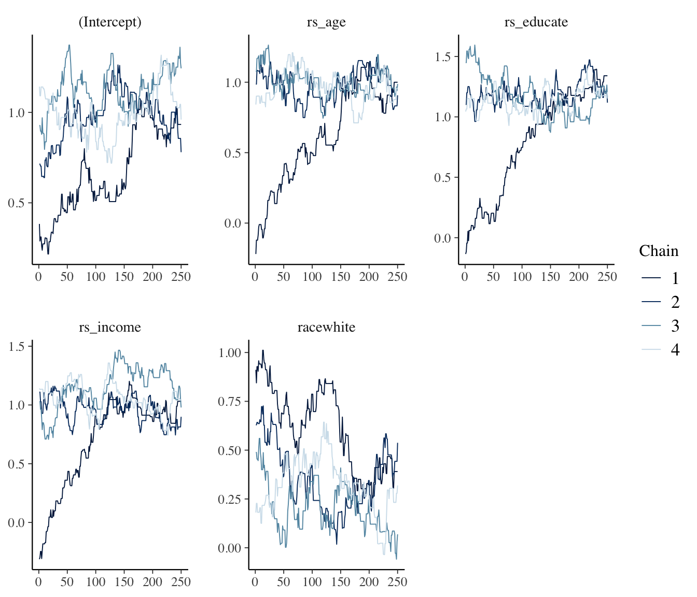
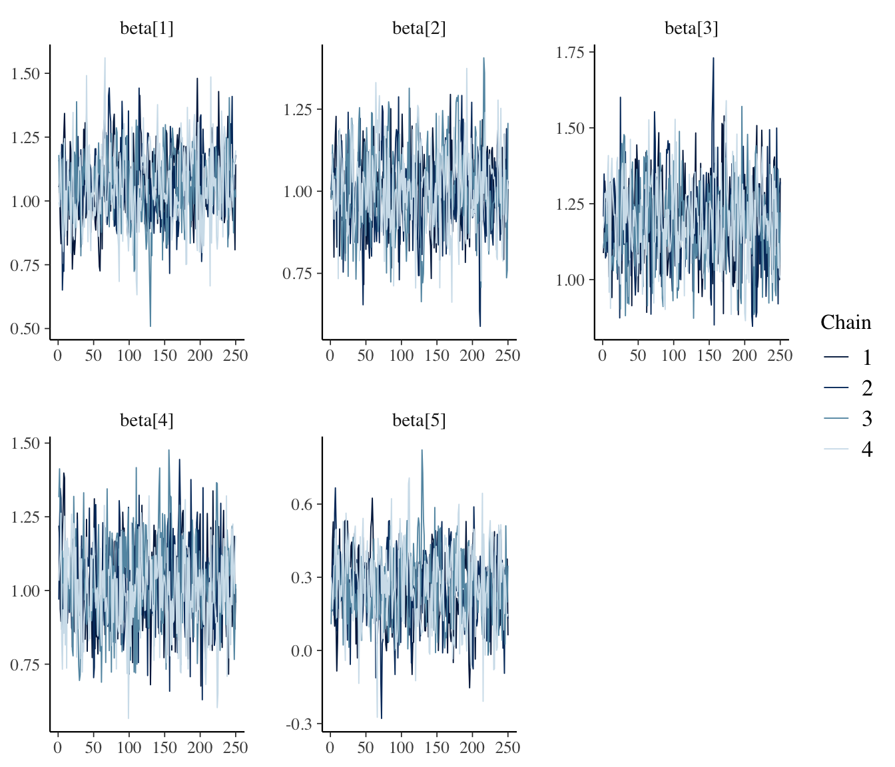
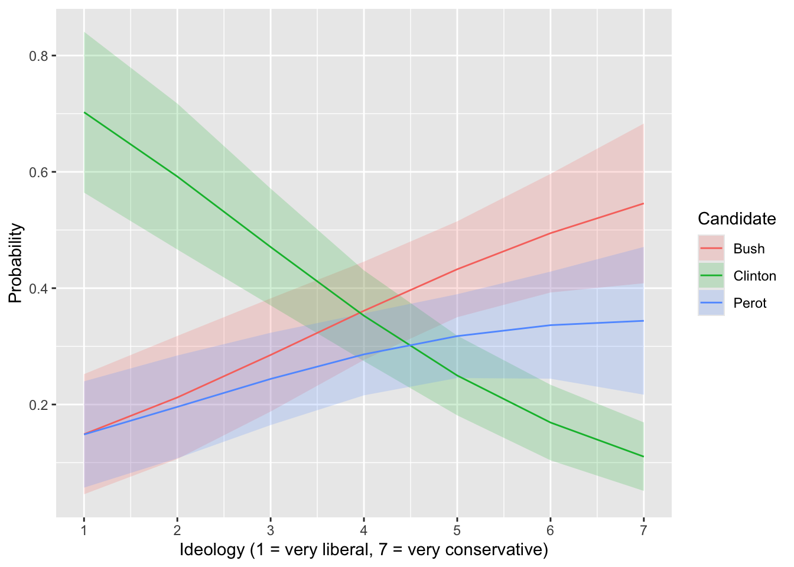
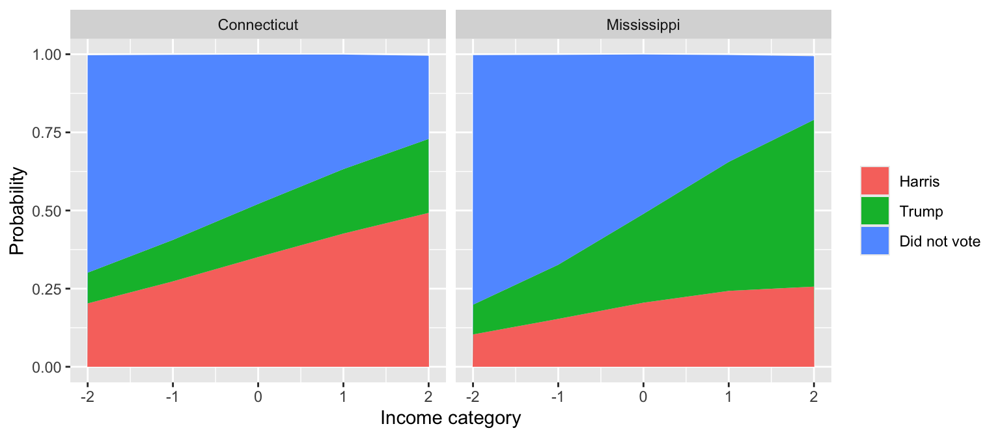
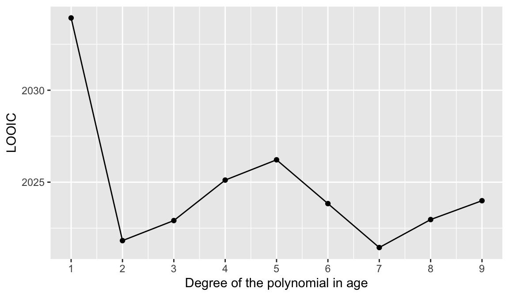

# load packages
library(cmdstanr)
library(posterior)
library(bayesplot)
# data and design matrix, with rescaled predictors (as in the notes)
turnout <- ZeligData::turnout |>
mutate(across(age:income, arm::rescale, .names = "rs_{.col}"))
f <- vote ~ rs_age + rs_educate + rs_income + race
X <- model.matrix(f, data = turnout)
y <- turnout$vote
# unnormalized log posterior for many values of beta at once
# - beta has one row per value of beta; the result has one log posterior per row
# - normal(0, 5) prior on each coefficient, same as logit.stan
log_post_many <- function(beta, y, X) {
eta <- X %*% t(beta) # one column per row of beta
log_lik <- colSums(y * eta - (pmax(eta, 0) + log1p(exp(-abs(eta))))) # stable log(1 + exp(eta))
log_prior <- rowSums(dnorm(beta, mean = 0, sd = 5, log = TRUE))
log_lik + log_prior
}
# the same log posterior for a single value of beta (for metrop())
log_post <- function(beta, y, X) {
log_post_many(matrix(beta, nrow = 1), y, X)
}Week 7 Exercises
Complete solutions open Friday, October 9 at 12:00 PM
Setting up {brms} and Stan
For this first week using Stan, we need to set up a working Stan toolchain. You must do this before anything else. You only need to do this once. Ask for help if you run into trouble.
# install the R packages
install.packages(c("brms", "rstan"))
install.packages("cmdstanr", repos = c("https://stan-dev.r-universe.dev", getOption("repos")))
# check the C++ toolchain, then install CmdStan
cmdstanr::check_cmdstan_toolchain(fix = TRUE)
cmdstanr::install_cmdstan()
# test: this should compile, sample, and print a summary
library(brms)
fit <- brm(mpg ~ hp, data = mtcars, backend = "cmdstanr")
fitExercise 1 Three samplers, one posterior
Let’s use the logit model of the turnout dataset and consider three approaches to sampling from the posterior: rejection (Week 6), Metropolis, and Stan. The posterior is identical for all three: rescaled predictors with a normal(0, 5) prior on each coefficient (i.e., the notes’ logit.stan). We want to get a feel for how well these samplers do for this (relatively easy) problem.
The exercise requires you to run the code below, make a few changes, and see how well each sampler does.
Start by running this code.
Rejection.
The code below applies the simple rejection algorithm we saw for a 1d problem bounded between 0 and 1 to a multidimensional, unbounded problem (i.e., estimating logit coefficients).
The code below creates rej_box(), which works in batches of one million proposals (!!).
# log M: the log posterior at its peak
opt <- optim(rep(0, ncol(X)), log_post, y = y, X = X,
method = "BFGS", control = list(fnscale = -1))
log_M <- opt$value
# rejection sampling with uniform proposals within a box, in batches
# - lower and upper give the box: one interval for each coefficient
# - stops at S accepted draws or after max_batches batches
rej_box <- function(lower, upper, log_M, y, X, S = 1000, max_batches = 10,
batch_size = 1e6, chunk_size = 1e4) {
start_time <- Sys.time()
k <- length(lower)
samples <- matrix(NA_real_, nrow = 0, ncol = k)
for (b in 1:max_batches) {
n_accepted_batch <- 0
# evaluate the batch in chunks (a million proposals at once uses too much memory)
for (chunk in 1:(batch_size / chunk_size)) {
# propose: one row per proposal, uniform within the box
z <- matrix(runif(chunk_size * k, lower, upper), ncol = k, byrow = TRUE)
# accept with probability f(z) / M
accept <- log(runif(chunk_size)) <= log_post_many(z, y, X) - log_M
samples <- rbind(samples, z[accept, , drop = FALSE])
n_accepted_batch <- n_accepted_batch + sum(accept)
}
message("Batch ", b, " of ", max_batches, ": evaluated ",
scales::comma(batch_size), " proposals... ",
n_accepted_batch, " accepted (", nrow(samples), " accepted so far; ",
"worked for ", prettyunits::pretty_dt(Sys.time() - start_time), " so far)")
if (nrow(samples) >= S) break
}
time_total <- Sys.time() - start_time
message("⏰ Total time: ", prettyunits::pretty_dt(time_total))
colnames(samples) <- colnames(X)
list(samples = head(samples, S), n_proposals = b * batch_size,
time_total = as.numeric(time_total, units = "secs"))
}Metropolis.
The code below is the minimal metrop() from the notes. chains_to_draws() stacks the chains into a draws object.
metrop <- function(logf, theta_start, S = 10000, tau = 0.1, ...) {
# initialize matrix of samples with starting values
k <- length(theta_start)
samples <- matrix(NA_real_, nrow = S, ncol = k)
samples[1, ] <- theta_start
# proceed with algorithm
for (s in 2:S) {
# extract current location
current <- samples[s - 1, ]
# generate symmetric random-walk proposal
proposed_move <- runif(k, -tau, tau)
proposal <- current + proposed_move
# acceptance step
delta <- logf(proposal, ...) - logf(current, ...)
if (delta > 0) {
accept <- TRUE
} else {
accept <- (log(runif(1)) <= delta)
}
# update samples
if (accept) {
samples[s, ] <- proposal
} else {
samples[s, ] <- current
}
}
samples
}
# stack a list of chains (each S x k) into a draws array; discard the first half of each
chains_to_draws <- function(chains, coef_names) {
S <- nrow(chains[[1]])
keep <- (S / 2 + 1):S
draws <- array(NA_real_, dim = c(length(keep), length(chains), length(coef_names)),
dimnames = list(NULL, NULL, coef_names))
for (c in seq_along(chains)) {
draws[, c, ] <- chains[[c]][keep, ]
}
as_draws_array(draws)
}Stan.
The code below implements logit.stan from the notes.
stan_code <- "
data {
int<lower=0> N;
int<lower=1> K;
array[N] int<lower=0, upper=1> y;
matrix[N, K] X;
}
parameters {
vector[K] beta;
}
model {
beta ~ normal(0, 5); // weakly informative prior
y ~ bernoulli_logit(X * beta); // logistic regression likelihood
}
"
stan_data <- list(N = nrow(X), K = ncol(X), y = y, X = X)The code below runs each sampler. Observe how quickly each sampler finishes.
# rejection: a box from -2 to 2 for every coefficient
set.seed(1234)
rej_wide <- rej_box(lower = rep(-2, 5), upper = rep(2, 5), # the box: -2 to 2 for each of the 5 coefficients
log_M = log_M, y = y, X = X,
S = 1000, # stop once 1,000 draws are accepted
max_batches = 10, # ...or after 10 batches, whichever comes first
batch_size = 1e6, # one million proposals per batch (one progress message per batch)
chunk_size = 1e4) # evaluate each batch 10,000 proposals at a time (to save memory)This code runs 10 batches of one million proposals. How many accepted? Estimate the acceptance rate, roughly. How many proposals would you need and how much time would 1,000 draws take?
Now run the Metropolis and Stan samplers below.
# metropolis: 4 chains of 500 from overdispersed starting values
set.seed(1234)
met_chains <- map(c(-2, -1, 1, 2), \(start_value) {
metrop(log_post, theta_start = rep(start_value, 5), S = 500, y = y, X = X)
})
met_draws <- chains_to_draws(met_chains, colnames(X))
# stan: 4 chains of 500 (250 warmup + 250 sampling)
mod <- cmdstan_model(write_stan_file(stan_code))
fit_stan <- mod$sample(data = stan_data, chains = 4, parallel_chains = 4,
iter_warmup = 250, iter_sampling = 250, seed = 1234)Running MCMC with 4 parallel chains...
Chain 1 Iteration: 1 / 500 [ 0%] (Warmup)
Chain 1 Iteration: 100 / 500 [ 20%] (Warmup)
Chain 1 Iteration: 200 / 500 [ 40%] (Warmup)
Chain 1 Iteration: 251 / 500 [ 50%] (Sampling)
Chain 2 Iteration: 1 / 500 [ 0%] (Warmup)
Chain 2 Iteration: 100 / 500 [ 20%] (Warmup)
Chain 2 Iteration: 200 / 500 [ 40%] (Warmup)
Chain 2 Iteration: 251 / 500 [ 50%] (Sampling)
Chain 3 Iteration: 1 / 500 [ 0%] (Warmup)
Chain 3 Iteration: 100 / 500 [ 20%] (Warmup)
Chain 3 Iteration: 200 / 500 [ 40%] (Warmup)
Chain 3 Iteration: 251 / 500 [ 50%] (Sampling)
Chain 4 Iteration: 1 / 500 [ 0%] (Warmup)
Chain 4 Iteration: 100 / 500 [ 20%] (Warmup)
Chain 4 Iteration: 200 / 500 [ 40%] (Warmup)
Chain 4 Iteration: 251 / 500 [ 50%] (Sampling)
Chain 1 Iteration: 350 / 500 [ 70%] (Sampling)
Chain 1 Iteration: 450 / 500 [ 90%] (Sampling)
Chain 1 Iteration: 500 / 500 [100%] (Sampling)
Chain 2 Iteration: 350 / 500 [ 70%] (Sampling)
Chain 2 Iteration: 450 / 500 [ 90%] (Sampling)
Chain 2 Iteration: 500 / 500 [100%] (Sampling)
Chain 3 Iteration: 350 / 500 [ 70%] (Sampling)
Chain 3 Iteration: 450 / 500 [ 90%] (Sampling)
Chain 4 Iteration: 350 / 500 [ 70%] (Sampling)
Chain 4 Iteration: 450 / 500 [ 90%] (Sampling)
Chain 4 Iteration: 500 / 500 [100%] (Sampling)
Chain 1 finished in 0.2 seconds.
Chain 2 finished in 0.2 seconds.
Chain 4 finished in 0.2 seconds.
Chain 3 Iteration: 500 / 500 [100%] (Sampling)
Chain 3 finished in 0.3 seconds.
All 4 chains finished successfully.
Mean chain execution time: 0.2 seconds.
Total execution time: 0.4 seconds.stan_draws <- fit_stan$draws("beta")
# convergence and effective sample size for each coefficient
summarize_draws(met_draws, "rhat", "ess_bulk", "ess_tail")# A tibble: 5 × 4
variable rhat ess_bulk ess_tail
<chr> <dbl> <dbl> <dbl>
1 (Intercept) 1.66 6.60 11.3
2 rs_age 1.40 9.30 11.2
3 rs_educate 1.60 6.98 11.3
4 rs_income 1.68 6.53 11.1
5 racewhite 1.52 7.51 22.2- For Metropolis and Stan (500 iterations per chain), compute R-hat and the bulk and tail ESS for each coefficient with
summarize_draws(). Make trace plots withmcmc_trace(). Have the chains converged? - How long must the Metropolis and Stan chains be for R-hat to fall below 1.01 and the bulk ESS to exceed 1,000 for every coefficient? (At that point, the MCMC draws are about as informative as the 1,000 independent rejection draws.) Keep using the first half of each chain for burn-in (Metropolis) or “warmup” (Stan’s language). Which sampler needs more iterations? Why?
- Run
fit_stan$diagnostic_summary(). What does it report? (See the HMC diagnostics below.)
HMC diagnostics.
Stan reports three warnings that Metropolis doesn’t have.
- Divergent transitions means that the sampler reached a region of the posterior it can’t follow (e.g., sharp curvature). Any divergent transitions after warmup mean the draws might be unrepresentative of the posterior. To fix them, raise
adapt_delta(e.g., to 0.95 or 0.99), rescale the predictors (usually so helpful you should do it by default), or reparameterize the model. - Maximum treedepth means that the sampler cut its trajectories short. This is a problem of efficiency only. To fix it, rescale the predictors or raise
max_treedepth. - E-BFMI below 0.3. The sampler explores the posterior poorly (e.g., because of heavy tails or a difficult geometry). To fix it, reparameterize the model or use more informative priors.
To check these, use fit$diagnostic_summary() for a {cmdstanr} fit and rstan::check_hmc_diagnostics(fit$fit) for a {brms} fit. This works with backend = "cmdstanr" too, because {brms} stores the fit as an {rstan} object either way.
Hint 1
The share of proposals accepted estimates the acceptance rate. Divide 1,000 by that rate to find the number of proposals you need. The output gives the time for each million proposals. The 10 batches take about 10 minutes.
Hint 2
Metropolis. You’ll find that 500 iterations per chain isn’t enough. Try about 5,000 (a few seconds). If that’s not enough, try 100,000 (about 1 to 2 minutes).
Stan. You’ll find that 500 iterations per chain isn’t quite enough. Try about 750. If that’s not enough, try 1,500. Each run takes a few seconds (plus up to a minute to compile the model the first time).
Complete solution
Rejection, the box from −2 to 2
# rejection: a box from -2 to 2 for every coefficient
set.seed(1234)
rej_wide <- rej_box(lower = rep(-2, 5), upper = rep(2, 5), # the box: -2 to 2 for each of the 5 coefficients
log_M = log_M, y = y, X = X,
S = 1000, # stop once 1,000 draws are accepted
max_batches = 10, # ...or after 10 batches, whichever comes first
batch_size = 1e6, # one million proposals per batch (one progress message per batch)
chunk_size = 1e4) # evaluate each batch 10,000 proposals at a time (to save memory)Batch 1 of 10: evaluated 1,000,000 proposals... 0 accepted (0 accepted so far; worked for 42.4s so far)Batch 2 of 10: evaluated 1,000,000 proposals... 4 accepted (4 accepted so far; worked for 1m 24.3s so far)Batch 3 of 10: evaluated 1,000,000 proposals... 0 accepted (4 accepted so far; worked for 2m 6.3s so far)Batch 4 of 10: evaluated 1,000,000 proposals... 0 accepted (4 accepted so far; worked for 2m 48.4s so far)Batch 5 of 10: evaluated 1,000,000 proposals... 1 accepted (5 accepted so far; worked for 3m 30.5s so far)Batch 6 of 10: evaluated 1,000,000 proposals... 2 accepted (7 accepted so far; worked for 4m 12.9s so far)Batch 7 of 10: evaluated 1,000,000 proposals... 1 accepted (8 accepted so far; worked for 4m 55.3s so far)Batch 8 of 10: evaluated 1,000,000 proposals... 1 accepted (9 accepted so far; worked for 5m 37.4s so far)Batch 9 of 10: evaluated 1,000,000 proposals... 1 accepted (10 accepted so far; worked for 6m 19.4s so far)Batch 10 of 10: evaluated 1,000,000 proposals... 1 accepted (11 accepted so far; worked for 7m 2.2s so far)⏰ Total time: 7m 2.2s# acceptance rate, and what 1,000 draws would take
n_accepted <- nrow(rej_wide$samples)
rate <- n_accepted / rej_wide$n_proposals
proposals_needed <- 1000 / rate
hours_needed <- proposals_needed * (rej_wide$time_total / rej_wide$n_proposals) / 3600
c(accepted = n_accepted, rate = rate,
proposals_needed = proposals_needed, hours_needed = hours_needed) accepted rate proposals_needed hours_needed
1.100000e+01 1.100000e-06 9.090909e+08 1.066108e+01 We accepted 11 of 10 million proposals in 7 minutes. That’s an acceptance rate of about 1.1 × 10⁻⁶. At that rate, 1,000 draws would take about 900 million proposals (about 11 hours).
Part 1
# metropolis: 4 chains of 500
set.seed(1234)
met_chains_500 <- map(c(-2, -1, 1, 2), \(start_value) {
metrop(log_post, theta_start = rep(start_value, 5), S = 500, y = y, X = X)
})
met_draws_500 <- chains_to_draws(met_chains_500, colnames(X))# stan: compile, then 4 chains of 500 (250 warmup + 250 sampling)
mod <- cmdstan_model(write_stan_file(stan_code))
fit_stan_500 <- mod$sample(data = stan_data, chains = 4, parallel_chains = 4,
iter_warmup = 250, iter_sampling = 250, seed = 1234)
stan_draws_500 <- fit_stan_500$draws("beta") # load the draws now (the fit's files are temporary)
stan_diag_500 <- fit_stan_500$diagnostic_summary()# metropolis
summarize_draws(met_draws_500, "rhat", "ess_bulk", "ess_tail")# A tibble: 5 × 4
variable rhat ess_bulk ess_tail
<chr> <dbl> <dbl> <dbl>
1 (Intercept) 1.66 6.60 11.3
2 rs_age 1.40 9.30 11.2
3 rs_educate 1.60 6.98 11.3
4 rs_income 1.68 6.53 11.1
5 racewhite 1.52 7.51 22.2# stan
summarize_draws(stan_draws_500, "rhat", "ess_bulk", "ess_tail")# A tibble: 5 × 4
variable rhat ess_bulk ess_tail
<chr> <dbl> <dbl> <dbl>
1 beta[1] 1.00 512. 572.
2 beta[2] 1.00 763. 665.
3 beta[3] 1.00 826. 565.
4 beta[4] 1.00 780. 687.
5 beta[5] 1.00 533. 602.mcmc_trace(met_draws_500)
mcmc_trace(stan_draws_500)
For Metropolis, R-hat ranges from 1.40 to 1.68 and the bulk ESS from 7 to 9. The four chains are still in different places (see the trace plot), so they haven’t converged.
For Stan, R-hat is 1.00 and the bulk ESS ranges from 512 to 826 (from 1,000 draws). The chains have converged, but the ESS is short of 1,000.
Part 2
# metropolis: 4 chains of 5,000, then 100,000
set.seed(1234)
met_chains_5k <- map(c(-2, -1, 1, 2), \(start_value) {
metrop(log_post, theta_start = rep(start_value, 5), S = 5000, y = y, X = X)
})
met_draws_5k <- chains_to_draws(met_chains_5k, colnames(X))
set.seed(1234)
start <- Sys.time()
met_chains_100k <- map(c(-2, -1, 1, 2), \(start_value) {
metrop(log_post, theta_start = rep(start_value, 5), S = 100000, y = y, X = X)
})
met_draws_100k <- chains_to_draws(met_chains_100k, colnames(X))
time_met <- as.numeric(difftime(Sys.time(), start, units = "secs"))# stan: 4 chains of 750, then 1,500 (half warmup); force a fresh compile so the time is honest
start <- Sys.time()
mod <- cmdstan_model(write_stan_file(stan_code), force_recompile = TRUE)
time_compile <- as.numeric(difftime(Sys.time(), start, units = "secs"))
fit_stan_750 <- mod$sample(data = stan_data, chains = 4, parallel_chains = 4,
iter_warmup = 375, iter_sampling = 375, seed = 1234)
stan_draws_750 <- fit_stan_750$draws("beta")
start <- Sys.time()
fit_stan <- mod$sample(data = stan_data, chains = 4, parallel_chains = 4,
iter_warmup = 750, iter_sampling = 750, seed = 1234)
stan_draws <- fit_stan$draws("beta")
stan_diag <- fit_stan$diagnostic_summary()
time_stan <- time_compile + as.numeric(difftime(Sys.time(), start, units = "secs"))# metropolis, 5,000 and 100,000 per chain
summarize_draws(met_draws_5k, "rhat", "ess_bulk", "ess_tail")# A tibble: 5 × 4
variable rhat ess_bulk ess_tail
<chr> <dbl> <dbl> <dbl>
1 (Intercept) 1.01 145. 310.
2 rs_age 1.02 205. 463.
3 rs_educate 1.02 128. 300.
4 rs_income 1.01 194. 294.
5 racewhite 1.01 157. 436.summarize_draws(met_draws_100k, "rhat", "ess_bulk", "ess_tail")# A tibble: 5 × 4
variable rhat ess_bulk ess_tail
<chr> <dbl> <dbl> <dbl>
1 (Intercept) 1.00 2449. 5337.
2 rs_age 1.00 4386. 8699.
3 rs_educate 1.00 3396. 7060.
4 rs_income 1.00 2829. 5857.
5 racewhite 1.00 2473. 5395.# stan, 750 and 1,500 per chain
summarize_draws(stan_draws_750, "rhat", "ess_bulk", "ess_tail")# A tibble: 5 × 4
variable rhat ess_bulk ess_tail
<chr> <dbl> <dbl> <dbl>
1 beta[1] 1.01 900. 721.
2 beta[2] 1.00 1082. 1025.
3 beta[3] 1.00 978. 921.
4 beta[4] 1.00 1326. 870.
5 beta[5] 1.01 929. 735.summarize_draws(stan_draws, "rhat", "ess_bulk", "ess_tail")# A tibble: 5 × 4
variable rhat ess_bulk ess_tail
<chr> <dbl> <dbl> <dbl>
1 beta[1] 1.00 1697. 1636.
2 beta[2] 1.00 2189. 2016.
3 beta[3] 1.00 2408. 2037.
4 beta[4] 1.00 2396. 1669.
5 beta[5] 1.00 1727. 1559.Metropolis with 5,000 iterations per chain isn’t enough (R-hat from 1.01 to 1.02, bulk ESS from 128 to 205). With 100,000, R-hat is 1.00 and every bulk ESS is at least 2,449.
Stan with 750 iterations per chain is just short (the bulk ESS ranges from 900 to 1,326, so one coefficient falls below 1,000). With 1,500, every bulk ESS is at least 1,697.
So Metropolis needs about 70 times as many iterations as Stan (100,000 vs. 1,500).
# total time in seconds (for stan, compilation plus sampling)
c(metropolis = time_met, stan = time_stan, stan_compile = time_compile) metropolis stan stan_compile
47.414644 5.154759 3.666389 Metropolis took about 55 seconds. Stan took 7 seconds, and 5 of those went to compiling the model.
Stan uses the gradient of the log posterior to make long moves that are still accepted. Metropolis takes small random steps.
Part 3
stan_diag$num_divergent
[1] 0 0 0 0
$num_max_treedepth
[1] 0 0 0 0
$ebfmi
[1] 1.1420572 0.9706250 1.0699158 0.9738542There are no divergent transitions, no treedepth hits, and E-BFMI ≈ 1 in every chain. This is an easy posterior for HMC.
Exercise 2 brm()
Reproduce the familiar negative binomial regression below with brm().
# load packages
library(glmmTMB)
Attaching package: 'glmmTMB'The following object is masked from 'package:brms':
lognormalThe following object is masked from 'package:marginaleffects':
refit# load data
holland <- crdata::holland2015
# formula corresponds to model 1 for each city in holland (2015) table 2
f <- operations ~ lower + vendors + budget + population
# fit negative binomial regression model for Santiago
fit <- glmmTMB(
f,
family = nbinom2,
data = holland,
subset = city == "santiago"
)
# summary
summary(fit)Hint 1
See ?brms::brmsfamily for the distributions available in brm().
Hint 2
Use #| results: hide in your Quarto code chunks to hide the Stan junk output. It’s pesky.
Complete solution
# load packages
library(brms)
# fit negative binomial regression model for Santiago
fit_brm <- brm(
f,
family = negbinomial,
data = subset(holland, city == "santiago"), # brm() doesn't have subset
backend = "cmdstanr",
seed = 1234
)# summary
summary(fit_brm) Family: negbinomial
Links: mu = log
Formula: operations ~ lower + vendors + budget + population
Data: subset(holland, city == "santiago") (Number of observations: 34)
Draws: 4 chains, each with iter = 2000; warmup = 1000; thin = 1;
total post-warmup draws = 4000
Regression Coefficients:
Estimate Est.Error l-95% CI u-95% CI Rhat Bulk_ESS Tail_ESS
Intercept 2.84 2.09 -0.97 7.33 1.00 2516 1708
lower -0.05 0.03 -0.12 0.00 1.00 2383 1751
vendors -0.23 0.31 -0.83 0.39 1.00 1862 2055
budget 0.00 0.00 -0.00 0.01 1.00 2925 2218
population 0.04 0.05 -0.04 0.14 1.00 1788 1696
Further Distributional Parameters:
Estimate Est.Error l-95% CI u-95% CI Rhat Bulk_ESS Tail_ESS
shape 0.31 0.11 0.14 0.58 1.00 1787 2173
Draws were sampled using sample(hmc). For each parameter, Bulk_ESS
and Tail_ESS are effective sample size measures, and Rhat is the potential
scale reduction factor on split chains (at convergence, Rhat = 1).Exercise 3 Convergence
Using the output above, argue that warmup and iter are sufficiently large (or not).
Complete solution
Setup recap 4 chains;
iter = 2000;warmup = 1000; post-warmup = 1000 per chain → 4000 total draws.\(\hat R\) → all parameters near 1.00 Why it matters: \(\hat R \approx 1.00\) indicates chains mix to the same target after adaptation. Evidence: Intercept,
lower,vendors,budget,population, andshapeall showRhat = 1.00, consistent with well-tuned warmup and sufficient iterations for convergence.Effective sample sizes → large Why it matters:
Bulk_ESSgauges precision of means;Tail_ESSgauges interval tails. Rules of thumb: ESS above 2000 per parameter. Evidence:Bulk_ESSandTail_ESSare about 1700 to 2900 across parameters (e.g.,lower:Bulk_ESS2383;shape: 1787),
Exercise 4 brm() arguments
Explain the following arguments to brm(). Explain what the argument controls and recommend reasonable defaults.
chainsiterwarmupcoresbackend
Complete solution
chainsWhat it controls: Number of independent MCMC chains to run. Why it matters: Multiple chains start from different initial values, helping check convergence (e.g., via \(\hat R\)). Reasonable default:chains = 4. Fewer if slow, more if diagnostics are uncertain.iterWhat it controls: Total iterations per chain, including warmup. Why it matters: More iterations yield more effective posterior draws and reduce Monte Carlo error. Reasonable default:iter = 2000(with half used for warmup). Use 4000–8000 for complex models.warmupWhat it controls: Number of iterations per chain used for tuning (e.g., step size, mass matrix) and discarded afterward. Why it matters: Proper adaptation improves sampling efficiency and stability. Reasonable default:warmup = 1000(half ofiter).coresWhat it controls: Number of CPU cores used to run chains in parallel. Why it matters: Parallel chains shorten total runtime. Reasonable default:cores = chains, often withoptions(mc.cores = parallel::detectCores()).backendWhat it controls: The Stan interface used for sampling. Options:"cmdstanr"or"rstan". Why it matters: Determines compilation speed, diagnostics, and toolchain. Reasonable default:"cmdstanr"(if installed); otherwise defaults to"rstan".
Example
fit <- brm(
y ~ x1 + x2,
data = df,
family = gaussian(),
chains = 4,
iter = 4000,
warmup = 2000,
cores = 4,
backend = "cmdstanr"
)Exercise 5 Experimenting with difficult posterior
The posterior below is difficult for Stan with the predictors on their original scales.
Here’s one way to think about efficiency: you want your effective samples per second (of your time) to be relatively large. sps() below computes the average bulk ESS across the parameters, divided by the sampling time. It also reports the number of divergent transitions and the largest R-hat. If a fit has divergent transitions or hasn’t converged, we can’t trust it, so its speed doesn’t matter.
# load data
hks <- crdata::hks2013
# fit negative binomial model
f <- osvAll ~ troopLag + policeLag + militaryobserversLag +
brv_AllLag + osvAllLagDum + incomp + epduration +
lntpop
fit_mcmc <- brm(
f,
data = hks,
family = negbinomial,
chains = 4,
cores = 4,
backend = "cmdstanr",
seed = 1234)# effective samples per second, plus the checks that tell us whether to trust the fit
sps <- function(fit) {
times <- rstan::get_elapsed_time(fit$fit) # seconds for each chain (warmup + sampling)
t <- max(apply(times, 1, sum)) # the slowest chain
ess <- bayestestR::effective_sample(fit)
avg_ess <- mean(ess$ESS_bulk) # average bulk ess across the parameters
list("sps" = avg_ess/t,
"divergences" = rstan::get_num_divergent(fit$fit), # divergent transitions after warmup
"max_rhat" = max(brms::rhat(fit), na.rm = TRUE), # convergence
"ess" = ess)
}- Run the code above, then
sps(fit_mcmc). Have the chains converged? Are there divergent transitions? (See the HMC diagnostics in Exercise 1.) - Rescale the predictors with
arm::rescale()and refit. Comparesps()for the two fits. - Why does rescaling help so much?
Hint
For part 2, you can rescale inside the formula (e.g., osvAll ~ arm::rescale(troopLag) + ...).
Complete solution
Part 1
sps(fit_mcmc)$sps
[1] 0.3198442
$divergences
[1] 1908
$max_rhat
[1] 3.019951
$ess
Parameter ESS_bulk ESS_tail
1 b_Intercept 5 11
2 b_troopLag 5 41
3 b_policeLag 5 13
4 b_militaryobserversLag 5 28
5 b_brv_AllLag 5 11
6 b_osvAllLagDum 6 19
7 b_incomp 5 35
8 b_epduration 5 11
9 b_lntpop 5 28On the original scales, Stan fails. R-hat is 3.02, the bulk ESS is 5 or 6 for every coefficient, and 1,908 of the 4,000 transitions (48%) are divergent. The chains haven’t converged, so we can’t trust this fit, and its speed (0.3 effective samples per second) doesn’t matter.
Part 2
rs <- \(x) arm::rescale(x) # alias
f_rs <- osvAll ~ rs(troopLag) + rs(policeLag) + rs(militaryobserversLag) +
rs(brv_AllLag) + rs(osvAllLagDum) + rs(incomp) + rs(epduration) +
rs(lntpop)
fit_mcmc_rs <- brm(
f_rs,
data = hks,
family = negbinomial,
chains = 4,
cores = 4,
backend = "cmdstanr",
seed = 1234)sps(fit_mcmc_rs)$sps
[1] 647.4592
$divergences
[1] 0
$max_rhat
[1] 1.003294
$ess
Parameter ESS_bulk ESS_tail
1 b_Intercept 5437 3392
2 b_rstroopLag 3186 2712
3 b_rspoliceLag 3959 2600
4 b_rsmilitaryobserversLag 3372 2593
5 b_rsbrv_AllLag 4467 2565
6 b_rsosvAllLagDum 3824 3107
7 b_rsincomp 3853 3019
8 b_rsepduration 4721 3241
9 b_rslntpop 3047 2950With the predictors rescaled, R-hat is 1.00, every bulk ESS is above 3,000, and there are no divergent transitions. Stan produces about 650 effective samples per second, compared with 0.3.
Part 3
# sd of each predictor on its original scale
hks |>
select(troopLag, policeLag, militaryobserversLag, brv_AllLag,
osvAllLagDum, incomp, epduration, lntpop) |>
map_dbl(sd) troopLag policeLag militaryobserversLag
2.8558605 0.1418510 0.1059394
brv_AllLag osvAllLagDum incomp
118.8278892 0.4253317 0.4648971
epduration lntpop
52.5904099 1.2084279 # original scales, but adapt_delta = 0.99
fit_mcmc_99 <- brm(
f,
data = hks,
family = negbinomial,
chains = 4,
cores = 4,
control = list(adapt_delta = 0.99), # from default of 0.8
backend = "cmdstanr",
seed = 1234)sps(fit_mcmc_99)[c("sps", "divergences", "max_rhat")]$sps
[1] 0.1502428
$divergences
[1] 1877
$max_rhat
[1] 3.020168On their original scales, the predictors’ SDs range from 0.1 (militaryobserversLag) to 119 (brv_AllLag), a factor of more than 1,000. So the plausible values of the coefficients differ in scale by about as much. Stan starts every coefficient at a random value between −2 and 2 and tunes its step sizes during warmup. With scales this different, those starting values are absurd for some coefficients (e.g., a coefficient of 2 on brv_AllLag, whose SD is 119, moves the log of the expected count by hundreds), and warmup doesn’t recover. After rescaling, every predictor has SD 0.5, so the coefficients are on similar scales.
Raising adapt_delta doesn’t help here. With adapt_delta = 0.99, there are still 1,877 divergent transitions and R-hat is 3.02. A higher adapt_delta is the usual fix for divergent transitions, but here the problem is the scales. This is why we rescale by default.
Exercise 6 Perot
Let’s return to the 1992 presidential vote (Bush, Clinton, and Perot), but now use Adolph’s specification rather than the notes’ model with party ID and the economy. In this exercise, you’ll use {marginaleffects} to compute and interpret the multinomial logit probabilities.
The data come from the same ANES file as the notes. We have 466 voters with complete data on these variables (Bush 184, Clinton 191, Perot 91). The variables are:
ideology: self-placement from 1 (very liberal) to 7 (very conservative)ideology_distance: the distance between the respondent’s own ideology and where they place Bush on the same scale (0 to 6)economy: the national economy compared with a year ago, from 1 (much better) to 5 (much worse)gulf_war: 1 if the respondent thinks the Gulf War was worth it, 0 otherwisenonwhite: 1 if the respondent is nonwhite, 0 otherwise
# load data; keep complete cases on the model's variables
perot_vote <- read_csv("https://pos5747.github.io/data/bush-approval-1992.csv") |>
select(vote_1992, ideology, ideology_distance, economy, gulf_war, nonwhite) |>
drop_na() |>
mutate(vote_1992 = factor(vote_1992, levels = c("Bush", "Clinton", "Perot")))
# fit multinomial logit; the first level (Bush) is the baseline
perot_fit <- nnet::multinom(vote_1992 ~ ideology + ideology_distance + economy + gulf_war + nonwhite,
data = perot_vote, trace = FALSE)
coef(perot_fit) (Intercept) ideology ideology_distance economy gulf_war
Clinton -1.134040 -0.52504754 0.7920291 0.5969867 -0.7615256
Perot -2.146247 -0.07646878 0.6818460 0.2918575 -0.3114140
nonwhite
Clinton 0.7537022
Perot -0.9945756- Compute the softmax of the linear predictors \((0, 1, -1)\). Then add 2 to each linear predictor and compute the softmax again. What do you notice?
- Use
predictions(..., type = "probs", newdata = datagrid(...))to compute Pr(Bush), Pr(Clinton), and Pr(Perot) for a moderate (ideology 4) whose ideology is 2 points from where they place Bush, who thinks the economy is somewhat worse (economy 4), who thinks the Gulf War was worth it, and who is white. - Relevel the outcome so that Clinton is the baseline and refit the model. Which coefficients change? How do the new coefficients relate to the old ones? Are the probabilities from part 2 the same?
- Plot the three probabilities as ideology moves from 1 to 7, holding the other variables at their part 2 values. Use
comparisons()to compute the change in each probability from 1 to 7. Compare the direction of Pr(Perot) with the sign of Perot’s ideology coefficient. What do you notice?
Hint 1
For part 1, \(\Pr(Y = j) = \frac{e^{z_j}}{\sum_k e^{z_k}}\). In R, that’s exp(z) / sum(exp(z)).
Hint 2
For part 3, use relevel(vote_1992, ref = "Clinton") or factor(..., levels = c("Clinton", "Bush", "Perot")). The refit’s estimates can differ from the ones you compute by hand in the fourth decimal (because of the optimizer’s tolerance).
For part 4, adapt the notes’ predictions() and geom_ribbon() code, with datagrid(ideology = 1:7, ...). Give the other four variables explicitly.
Complete solution
Part 1
# softmax of (0, 1, -1), then of (2, 3, 1)
perot_softmax <- function(z) exp(z) / sum(exp(z))
perot_softmax(c(0, 1, -1))[1] 0.24472847 0.66524096 0.09003057perot_softmax(c(0, 1, -1) + 2)[1] 0.24472847 0.66524096 0.09003057Both times, the probabilities are 0.245, 0.665, and 0.090. Adding the same constant to every linear predictor doesn’t change the probabilities. The \(e^{2}\) cancels.
\[ \Pr(Y = j) = \frac{e^{z_j + 2}}{\sum_k e^{z_k + 2}} = \frac{e^{2} e^{z_j}}{e^{2} \sum_k e^{z_k}} = \frac{e^{z_j}}{\sum_k e^{z_k}}. \]
This is why we can fix the baseline’s linear predictor at 0.
Part 2
# probabilities for the respondent
perot_profile <- datagrid(model = perot_fit, ideology = 4, ideology_distance = 2,
economy = 4, gulf_war = 1, nonwhite = 0)
predictions(perot_fit, newdata = perot_profile, type = "probs")
Group ideology ideology_distance economy gulf_war nonwhite Estimate
Bush 4 2 4 1 0 0.361
Clinton 4 2 4 1 0 0.353
Perot 4 2 4 1 0 0.286
Std. Error z Pr(>|z|) S 2.5 % 97.5 %
0.0431 8.38 <0.001 54.0 0.277 0.446
0.0398 8.86 <0.001 60.1 0.275 0.431
0.0360 7.96 <0.001 49.0 0.216 0.357
Type: probsThe probabilities are 0.361 (Bush), 0.353 (Clinton), and 0.286 (Perot).
For this moderate, Bush and Clinton nearly tie, and Pr(Perot) is about 0.29.
Part 3
# Clinton as the baseline
perot_vote_clinton <- perot_vote |>
mutate(vote_1992 = relevel(vote_1992, ref = "Clinton"))
perot_fit_clinton <- nnet::multinom(vote_1992 ~ ideology + ideology_distance + economy + gulf_war + nonwhite,
data = perot_vote_clinton, trace = FALSE)
coef(perot_fit_clinton) (Intercept) ideology ideology_distance economy gulf_war nonwhite
Bush 1.133744 0.5250520 -0.7920126 -0.5969593 0.7616524 -0.7537098
Perot -1.012627 0.4485993 -0.1101432 -0.3050862 0.4501643 -1.7484834# the same thing from the Bush-baseline fit: differences of the old rows
rbind(Bush = 0 - coef(perot_fit)["Clinton", ],
Perot = coef(perot_fit)["Perot", ] - coef(perot_fit)["Clinton", ]) (Intercept) ideology ideology_distance economy gulf_war nonwhite
Bush 1.134040 0.5250475 -0.7920291 -0.5969867 0.7615256 -0.7537022
Perot -1.012207 0.4485788 -0.1101831 -0.3051292 0.4501116 -1.7482778\[ \beta_{\text{Bush} \mid \text{Clinton}} = -\beta_{\text{Clinton} \mid \text{Bush}}, \qquad \beta_{\text{Perot} \mid \text{Clinton}} = \beta_{\text{Perot} \mid \text{Bush}} - \beta_{\text{Clinton} \mid \text{Bush}} \]
# probabilities for the part 2 respondent, both fits
perot_p_bush <- predictions(perot_fit, newdata = perot_profile, type = "probs")
perot_p_clinton <- predictions(perot_fit_clinton, newdata = perot_profile, type = "probs")
perot_p_bush |> select(group, estimate)
Group Estimate
Bush 0.361
Clinton 0.353
Perot 0.286perot_p_clinton |> select(group, estimate)
Group Estimate
Clinton 0.353
Bush 0.361
Perot 0.286# same log-likelihood
logLik(perot_fit)'log Lik.' -353.5879 (df=12)logLik(perot_fit_clinton)'log Lik.' -353.5879 (df=12)Every coefficient changes. The new Bush row is minus the old Clinton row (e.g., ideology 0.525, nonwhite −0.754). The new Perot row is the old Perot row minus the old Clinton row (e.g., ideology −0.076 − (−0.525) = 0.449; nonwhite −0.995 − 0.754 ≈ −1.75).
These differences match the refit to the third or fourth decimal (e.g., gulf_war 0.7617 vs. 0.7615). The gap comes from the optimizer’s tolerance.
The probabilities are identical to three decimals (0.361, 0.353, 0.286), and the log-likelihood is −353.59 for both fits. This is the same model with a different parameterization (i.e., the identification point from the notes).
Notice that relative to Clinton, Perot’s ideology coefficient is +0.45 (SE 0.10). We’ll need this in part 4.
Part 4
# probability of each candidate as ideology varies, other variables at the part 2 values
perot_p_ideology <- predictions(perot_fit,
newdata = datagrid(ideology = 1:7, ideology_distance = 2,
economy = 4, gulf_war = 1, nonwhite = 0),
type = "probs")
# plot
ggplot(perot_p_ideology, aes(x = ideology, y = estimate, ymin = conf.low, ymax = conf.high,
color = group, fill = group)) +
geom_ribbon(alpha = 0.2, color = NA) +
geom_line() +
scale_x_continuous(breaks = 1:7) +
labs(x = "Ideology (1 = very liberal, 7 = very conservative)", y = "Probability",
color = "Candidate", fill = "Candidate")
# change in each candidate's probability from very liberal (1) to very conservative (7)
comparisons(perot_fit,
variables = list(ideology = c(1, 7)),
newdata = datagrid(ideology_distance = 2, economy = 4, gulf_war = 1, nonwhite = 0),
type = "probs")
Group ideology_distance economy gulf_war nonwhite Estimate Std. Error z
Bush 2 4 1 0 0.397 0.1033 3.84
Clinton 2 4 1 0 -0.592 0.0875 -6.77
Perot 2 4 1 0 0.195 0.0930 2.10
Pr(>|z|) S 2.5 % 97.5 %
<0.001 13.0 0.1944 0.599
<0.001 36.1 -0.7639 -0.421
0.0356 4.8 0.0131 0.378
Term: ideology
Type: probs
Comparison: 7 - 1Perot’s ideology coefficient is negative (−0.08, relative to Bush), but Pr(Perot) rises steadily, from 0.15 at 1 to 0.29 at 4 and 0.34 at 7. The change is 0.19 (95% CI from 0.01 to 0.38).
Why? Perot’s coefficient (−0.08) sits between Bush’s (0) and Clinton’s (−0.53). As ideology moves from 1 to 7, Pr(Clinton) falls by 0.59, and Perot gets part of that. Relative to Clinton, Perot’s coefficient is +0.45 (part 3).
The sign of Perot’s coefficient is itself uncertain (the SE of 0.11 is larger than the estimate of 0.08). Either way, the lesson is the same. Compute the probabilities.
gulf_war shows the same thing. Perot’s coefficient is −0.31, but Pr(Perot) rises from 0.26 to 0.29 (the CI includes 0). And economy gives a non-monotone Pr(Perot), which peaks at 4 (0.29) and dips at 5 (0.28), even though the coefficient is positive (0.29).
One caveat: holding distance at 2 while ideology moves from 1 to 7 extrapolates. No respondent with ideology 1 has distance 2, and only 3 respondents with ideology 7 do.
Exercise 7 Red State, Blue State: Part 3
In Parts 2(a) and 2(b), we modeled party ID. Now let’s model the vote itself in the 2024 election, in the same two states. Recall Figure 4 in Gelman et al. (2007, p. 356). In 2000–2004, richer Mississippians voted Republican, but income barely mattered in Connecticut.
The data come from the 2024 CES. vote is “Did not vote” (i.e., no validated record of voting), “Harris”, or “Trump” (i.e., the vote reported in the post-election survey). income is the same five-point scale as in Part 2 (from −2 to 2).
Income might matter for whether people vote, not only for whom they vote. We have three outcomes with no order (did not vote, Harris, and Trump), so we need a multinomial logit.
# load data; Mississippi and Connecticut
ms_vote <- read_csv("https://pos5747.github.io/files/red-state-part3-mississippi.csv")
ct_vote <- read_csv("https://pos5747.github.io/files/red-state-part3-connecticut.csv")- Fit
brm(vote ~ income, family = categorical())in each state, with Harris as the baseline. What does each set of coefficients compare? - Use
predictions()to compute the probability of each outcome at each income category. Make a stacked plot with one panel per state. What changes with income? Turnout? Vote choice? Both? - Use
comparisons()to compute the change in the probability of each outcome as income moves from −1 to 1, in each state, with 90% CIs. Does income still matter more for the Trump vote in Mississippi? - Fit the Mississippi model without income (
vote ~ 1) and with income as a factor (vote ~ income_factor, whereincome_factor = factor(income)). Compare these two models with the income model usingloo()andloo_compare(). Does income improve the prediction? Does treating income as a factor improve it further?
Hint 1
For part 1, factor(vote, levels = c("Harris", "Trump", "Did not vote")) makes Harris the baseline (i.e., the first level).
Hint 2
For parts 2 and 3, predictions() and comparisons() work on a brm() fit just as on a multinom() fit. The group column holds the outcome. The intervals are posterior intervals.
Hint 3
For part 4, see “Interpreting elpd_diff and se_diff” in the LOOIC chapter. If loo() flags observations with a high Pareto \(\hat{k}\), see the chapter’s “Fixing high \(\hat{k}\)” section.
Complete solution
Part 1
# harris as the baseline
ms_vote <- ms_vote |>
mutate(vote = factor(vote, levels = c("Harris", "Trump", "Did not vote")))
ct_vote <- ct_vote |>
mutate(vote = factor(vote, levels = c("Harris", "Trump", "Did not vote")))
# multinomial logit in each state
fit_ms_vote <- brm(vote ~ income, data = ms_vote,
family = categorical(link = "logit"),
backend = "cmdstanr", chains = 4, cores = 4, seed = 1234)
fit_ct_vote <- brm(vote ~ income, data = ct_vote,
family = categorical(link = "logit"),
backend = "cmdstanr", chains = 4, cores = 4, seed = 1234)fixef(fit_ms_vote) Estimate Est.Error Q2.5 Q97.5
muTrump_Intercept 0.3288210 0.1485683 0.03176500 0.6317121
muDidnotvote_Intercept 0.9136666 0.1405976 0.63879890 1.1903143
muTrump_income 0.2043992 0.1518013 -0.09262864 0.5080977
muDidnotvote_income -0.5673395 0.1322043 -0.82865767 -0.3036846fixef(fit_ct_vote) Estimate Est.Error Q2.5 Q97.5
muTrump_Intercept -0.72719080 0.13819687 -0.9964379 -0.4573522
muDidnotvote_Intercept 0.31134849 0.10340930 0.1149826 0.5170650
muTrump_income -0.00188958 0.12692385 -0.2512843 0.2474895
muDidnotvote_income -0.46287657 0.09461065 -0.6445496 -0.2746005Each set of coefficients gives the log odds of that outcome vs. Harris (e.g., muTrump_income compares Trump with Harris). For “Did not vote”, the income coefficient is −0.57 in Mississippi and −0.46 in Connecticut. Richer people are less likely to stay home (relative to voting for Harris). For Trump, the income coefficient is 0.20 in Mississippi and 0.00 in Connecticut.
Part 2
p_vote <- bind_rows(
Mississippi = predictions(fit_ms_vote, newdata = datagrid(income = -2:2)),
Connecticut = predictions(fit_ct_vote, newdata = datagrid(income = -2:2)),
.id = "state"
)
ggplot(p_vote, aes(x = income, y = estimate, fill = group)) +
geom_area(position = position_stack(reverse = TRUE)) +
facet_wrap(vars(state)) +
labs(x = "Income category", y = "Probability", fill = NULL)
Pr(did not vote) falls from 0.80 to 0.20 in Mississippi and from 0.70 to 0.27 in Connecticut.
In Mississippi, Pr(Trump) rises from 0.10 to 0.53, and Pr(Harris) rises too, from 0.10 to 0.26. In Connecticut, Pr(Harris) rises from 0.20 to 0.49 and Pr(Trump) from 0.10 to 0.24.
So income changes both, but mostly turnout. Notice that richer Mississippians are more likely to vote for Harris than poorer Mississippians are, because poorer Mississippians mostly don’t vote.
Part 3
comparisons(fit_ms_vote, variables = list(income = c(-1, 1)), newdata = datagrid(grid_type = "mean_or_mode"), conf_level = 0.9)
Group Estimate 5.0 % 95.0 %
Harris 0.0888 0.0224 0.157
Trump 0.2382 0.1584 0.319
Did not vote -0.3293 -0.4026 -0.251
Term: income
Type: response
Comparison: 1 - -1comparisons(fit_ct_vote, variables = list(income = c(-1, 1)), newdata = datagrid(grid_type = "mean_or_mode"), conf_level = 0.9)
Group Estimate 5.0 % 95.0 %
Harris 0.1527 0.0897 0.217
Trump 0.0728 0.0217 0.123
Did not vote -0.2261 -0.2901 -0.158
Term: income
Type: response
Comparison: 1 - -1In Mississippi, Pr(did not vote) changes by −0.33 (90% interval from −0.40 to −0.25), Pr(Harris) by 0.09 (0.02 to 0.16), and Pr(Trump) by 0.24 (0.16 to 0.32).
In Connecticut, Pr(did not vote) changes by −0.23 (−0.29 to −0.16), Pr(Harris) by 0.15 (0.09 to 0.22), and Pr(Trump) by 0.07 (0.02 to 0.12).
Income matters much more for turnout than for vote choice. But income still matters more for the Trump vote in Mississippi (0.24 vs. 0.07). Notice that these are changes in Pr(Trump) among all respondents, not only among voters.
Part 4
# mississippi model without income
fit_ms_null <- brm(vote ~ 1, data = ms_vote,
family = categorical(link = "logit"),
backend = "cmdstanr", chains = 4, cores = 4, seed = 1234)# mississippi model with income as a factor (a separate effect for each category);
# create the factor as a column (factor() inside the formula breaks reloo)
ms_vote <- ms_vote |>
mutate(income_factor = factor(income))
fit_ms_factor <- brm(vote ~ income_factor, data = ms_vote,
family = categorical(link = "logit"),
backend = "cmdstanr", chains = 4, cores = 4, seed = 1234)loo_ms_null <- loo(fit_ms_null)
loo_ms_vote <- loo(fit_ms_vote)
loo_ms_factor <- loo(fit_ms_factor)Warning: Found 2 observations with a pareto_k > 0.7 in model 'fit_ms_factor'.
We recommend to set 'moment_match = TRUE' in order to perform moment matching
for problematic observations.loo_compare(loo_ms_null, loo_ms_vote, loo_ms_factor) model elpd_diff se_diff p_worse diag_diff diag_elpd
fit_ms_vote 0.0 0.0 NA
fit_ms_factor -8.8 2.7 1.00 2 k_psis > 0.7
fit_ms_null -23.2 6.9 1.00
Diagnostic flags present.
See ?`loo-glossary` (sections `diag_diff` and `diag_elpd`)
or https://mc-stan.org/loo/reference/loo-glossary.html.The model with income (one slope for each outcome) is best. The intercept-only model is worse by 23.2 elpd, with se_diff 6.9 (i.e., a LOOIC difference of 46.4). That’s well over 4 and about 3.4 SEs, so by the rules of thumb it’s a meaningful difference. Income improves the prediction, mostly through turnout (part 3).
The factor model is worse than the income model by 8.8 elpd (se_diff 2.7). But diag_elpd flags 2 observations with Pareto \(\hat{k} > 0.7\), so its PSIS estimate isn’t reliable. Both are in the top income category, which has only 4 Mississippians, so the factor model’s estimates for that category lean heavily on each of them. Let’s refit for those two observations.
# exact loo for the flagged observations in the factor model
reloo_ms_factor <- loo(fit_ms_factor, reloo = TRUE, reloo_args = list(seed = 1234))loo_compare(loo_ms_null, loo_ms_vote, reloo_ms_factor) model elpd_diff se_diff p_worse diag_diff diag_elpd
fit_ms_vote 0.0 0.0 NA
fit_ms_factor -16.7 8.2 0.98
fit_ms_null -23.2 6.9 1.00 With exact LOO for those two observations, the factor model is worse by 16.7 elpd (se_diff 8.2, about 2 SEs). PSIS was too optimistic about the factor model.
So treating income as a factor doesn’t improve the prediction. It makes it worse. The factor model has 10 coefficients (an intercept and four income effects for each of the two non-baseline outcomes), compared with 4 for the income model, and the extra ones are estimated from very few respondents.
Exercise 8 Polynomials in age and the LOOIC
In the LOOIC chapter, we compared models with linear and cubic age for the turnout data. Now let’s consider every polynomial in age from degree 1 (linear) to degree 9.
The code below fits the nine models with brm(), computes LOO for each, plots the LOOIC against the degree, and compares the models with loo_compare(). You don’t need to run it. Use the output to answer the questions below.
# load only the turnout data frame and create rescaled columns
turnout <- ZeligData::turnout |>
mutate(across(age:income, arm::rescale, .names = "rs_{.col}"))# fit the model with a polynomial in age of each degree from 1 to 9
# (poly() uses orthogonal polynomials, so the high powers don't blow up)
fits_poly <- map(1:9, \(degree) {
f <- as.formula(paste0("vote ~ poly(age, ", degree, ") + rs_educate + rs_income + race"))
brm(f, data = turnout, family = bernoulli,
backend = "cmdstanr", chains = 4, cores = 4, seed = 1234)
})
names(fits_poly) <- paste("degree", 1:9)
# loo for each model
loos_poly <- map(fits_poly, loo)# looic, its se, and p_loo for each model
looic_poly <- tibble(
degree = 1:9,
looic = map_dbl(loos_poly, \(l) l$estimates["looic", "Estimate"]),
se = map_dbl(loos_poly, \(l) l$estimates["looic", "SE"]),
p_loo = map_dbl(loos_poly, \(l) l$estimates["p_loo", "Estimate"])
)
looic_poly# A tibble: 9 × 4
degree looic se p_loo
<int> <dbl> <dbl> <dbl>
1 1 2034. 46.0 5.10
2 2 2022. 46.5 6.20
3 3 2023. 46.6 7.34
4 4 2025. 46.6 8.42
5 5 2026. 46.7 9.29
6 6 2024. 46.8 10.0
7 7 2021. 47.0 11.3
8 8 2023. 47.2 12.9
9 9 2024. 47.2 13.5 ggplot(looic_poly, aes(x = degree, y = looic)) +
geom_line() +
geom_point() +
scale_x_continuous(breaks = 1:9) +
labs(x = "Degree of the polynomial in age", y = "LOOIC")
# compare the nine models
loo_compare(loos_poly) model elpd_diff se_diff p_worse diag_diff diag_elpd
degree 7 0.0 0.0 NA 1 k_psis > 0.7
degree 2 -0.2 3.3 0.52 |elpd_diff| < 4
degree 3 -0.7 3.2 0.59 |elpd_diff| < 4
degree 8 -0.8 1.5 0.70 |elpd_diff| < 4 1 k_psis > 0.7
degree 6 -1.2 2.3 0.70 |elpd_diff| < 4
degree 9 -1.3 1.7 0.77 |elpd_diff| < 4 1 k_psis > 0.7
degree 4 -1.8 3.2 0.72 |elpd_diff| < 4
degree 5 -2.4 3.1 0.78 |elpd_diff| < 4
degree 1 -6.2 5.1 0.89
Diagnostic flags present.
See ?`loo-glossary` (sections `diag_diff` and `diag_elpd`)
or https://mc-stan.org/loo/reference/loo-glossary.html.- Which model has the lowest LOOIC?
- Compare the best and second-best models using
elpd_diffandse_diff. How strong is the evidence for the best model over the second best? - Compare the best model with the linear model (degree 1) the same way. How strong is the evidence now?
- If you had to choose one model, which would you choose? Why?
Hint
See “Interpreting elpd_diff and se_diff” in the LOOIC chapter. Remember that the LOOIC difference is −2 × elpd_diff.
Complete solution
Part 1
Degree 7 has the lowest LOOIC (2021.4), so it’s at the top of the table.
The LOOIC drops from 2034 (linear) to 2022 (quadratic). For degrees 2 through 9, it moves between 2021 and 2026, with no clear trend.
Each LOOIC has an SE of about 46, which is much larger than the differences. But I left those SEs off the plot. We compare the models on the same respondents, so the SE that matters is se_diff (i.e., the SE of the difference).
p_loo grows from 5.1 (degree 1) to 13.5 (degree 9), about one per added term. This is close to \(k\) = degree + 4, as we expect for a model that fits well.
Part 2
The second-best model is degree 2, with elpd_diff = −0.2 and se_diff = 3.3. Because |elpd_diff| < 4, the two models predict about equally well.
So we have no evidence for the best model over the second best. A difference this small is within the MCMC noise. In fact, every model from degree 2 to 9 is within 2.4 elpd of the best.
Part 3
For the linear model, elpd_diff = −6.2 and se_diff = 5.1 (i.e., a LOOIC difference of 12.4).
This difference is larger than 4, but it’s only about 1.2 SEs. This is modest evidence that age needs a curve. It’s close to the chapter’s comparison of the linear and cubic models (5.8, with se_diff 4.1).
Part 4
By the rules of thumb, no difference here is clearly meaningful. Degrees 2 through 9 are all within 4 elpd of the best, and the linear model is more than 4 behind but only about 1.2 SEs.
If I had to choose, I’d choose the quadratic. It predicts about as well as the best model, it’s the simplest model with a curve in age, and the curve has some (modest) support over the line. Other choices are reasonable if you defend them with elpd_diff and se_diff (e.g., the linear model for simplicity, given the modest evidence against it).